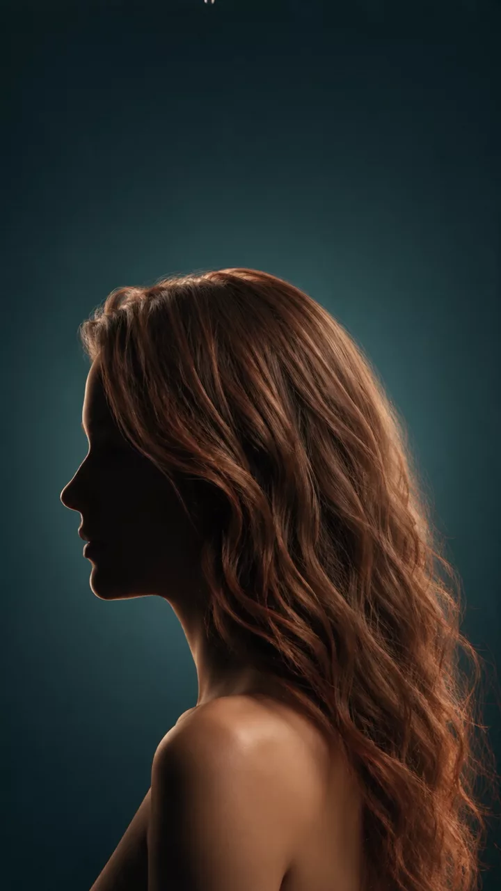

Friseursalon in München-Giesing
Ihr Friseur
in Giesing.
Bahar ist Friseurmeisterin und steht seit zwanzig Jahren selbst am Stuhl. Schnitt, Farbe, Strähnen, Brautstyling — die typgerechte Beratung ist inklusive.
Perlacher Straße 2 · 81539 München